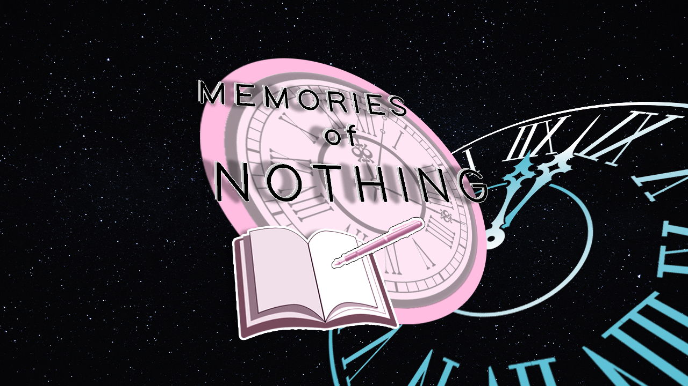

Memories of Nothing
Sobre o que é esse mod? Este é um mod de romance com a melhor garota - Natsuki! Existe um bom final! Comédia! Outras coisas.
⬇ Download
Sobre o que é esse mod? Este é um mod de romance com a melhor garota - Natsuki! Existe um bom final! Comédia! Outras coisas.
⬇ Download